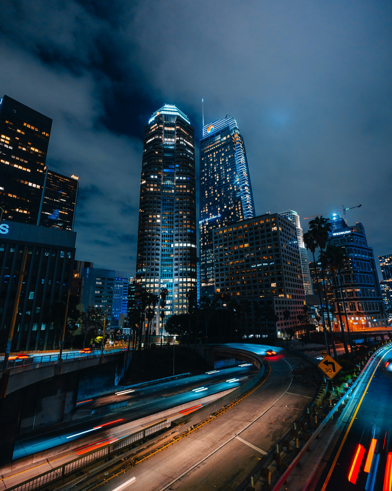

Top 10 cidades cyberpunk
Introdução
Cidades cyberpunks no mundo real são ambientes urbanos que se assemelham aos cenários futurísticos e distópicos da ficção cyberpunk. Elas combinam alta tecnologia com desigualdade social e influência corporativa intensa. Em cidades como Tóquio, Hong Kong e São Paulo, é possível ver a coexistência de arranha-céus de luxo e favelas, vigilância em massa e uma estética de decadência urbana, marcada por letreiros de néon e poluição. Essas cidades refletem uma mistura de avanços tecnológicos com desafios sociais, criando um ambiente que poderia ser tirado de um filme ou livro de ficção científica.
Top 10 cidades Cyberpunk:
Chongqing

Chongqing, com sua geografia montanhosa e arquitetura densa, tem uma atmosfera naturalmente cyberpunk. A cidade é marcada por uma paisagem urbana de arranha-céus iluminados por letreiros de neon, ruas estreitas e sobrepostas, e uma neblina constante que adiciona um ar misterioso e distópico. As imensas pontes e viadutos que atravessam a cidade criam uma rede complexa de infraestrutura, enquanto sua rápida modernização e expansão a transformam em um cenário realista de ficção científica.
Bangkok

Bangkok é uma metrópole vibrante onde a modernidade e a tradição se encontram. A cidade é conhecida por sua vida noturna intensa, letreiros de neon e ruas movimentadas, elementos que lembram fortemente a estética cyberpunk. O contraste entre as áreas tecnológicas e os bairros mais tradicionais acrescenta uma camada extra de complexidade à sua paisagem urbana.
Hong Kong

Hong Kong é uma cidade icônica no mundo cyberpunk, com seu horizonte densamente povoado por arranha-céus e ruas estreitas repletas de letreiros de neon. A fusão de culturas ocidentais e orientais, somada a uma atmosfera caótica e uma paisagem urbana que parece nunca dormir, tornam Hong Kong um cenário natural para histórias distópicas.
Toquio

Tóquio é uma metrópole que encapsula a essência do cyberpunk. Com bairros como Shibuya e Akihabara, repletos de arranha-céus iluminados por neon e tecnologia de ponta, a cidade mistura o tradicional e o futurista. As ruas lotadas, a densa população, e a presença constante de publicidade digital criam um ambiente que parece saído diretamente de um filme de ficção científica.
Singapura
Singapura, com sua infraestrutura moderna e altamente desenvolvida, representa uma visão futurista do urbanismo. A cidade-estado é limpa, eficiente e fortemente regulada, mas sua arquitetura futurista, sistemas de vigilância avançados e presença de grandes corporações dão a ela uma vibração que lembra um cenário de ficção científica distópica.
Xangai

Xangai, especialmente a área de Pudong, oferece um horizonte futurista com sua impressionante coleção de arranha-céus. A cidade é uma mistura perfeita de modernidade e tradição, onde tecnologias avançadas coexistem com bairros históricos. As luzes brilhantes, a constante movimentação e a presença de megacorporações criam um ambiente que reflete a estética cyberpunk.
Seul

Seul é uma cidade onde a tecnologia avançada e a cultura pop convergem. Bairros como Gangnam são conhecidos por seus arranha-céus futuristas e vida noturna vibrante, enquanto a presença omnipresente da tecnologia na vida cotidiana, como redes de 5G ultrarrápidas e dispositivos inteligentes, reforçam a atmosfera cyberpunk..
São Paulo

Uma das maiores metrópoles do mundo, São Paulo combina uma urbanização densa, contrastes sociais intensos, e uma vibrante cena de tecnologia e cultura. Seus arranha-céus, arte de rua, e a constante sensação de vigilância e caos urbano criam uma atmosfera que ressoa com a estética cyberpunk.
Los Angeles
Los Angeles é uma cidade eternamente associada ao cyberpunk, especialmente graças ao filme "Blade Runner". A mistura de culturas, vastas áreas urbanas iluminadas por luzes de néon e uma subcultura vibrante alimentam essa imagem. A diversidade e os contrastes sociais da cidade ajudam a criar um cenário perfeito para histórias distópicas.
Dubai

Dubai é uma cidade que personifica o futuro, com seus arranha-céus de arquitetura arrojada, como o Burj Khalifa, e inovações tecnológicas impressionantes. Construída no deserto, Dubai reflete a ambição humana de dominar a natureza, enquanto sua opulência e o contraste entre ricos e pobres criam uma paisagem urbana que ressoa com temas cyberpunk.